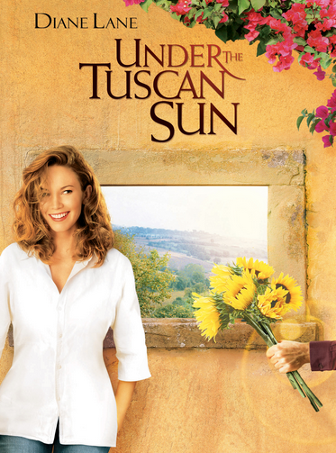

Under The Tuscan Sun is a movie about a writer, Frances Mayes, who finds out her husband is cheating on her. After the divorce, she spirals into a deep depression. Her best friend encourages her to take a tour of Italy, which she agrees to go. During the trip, she spontaneously buys a beautiful centuries old Italian villa. She starts her new life in Italy and gradually becomes acquianted with the towns-folk, who impact her in a positive way. Frances learns that life isn't over after a divorce.
I think we've all had moments where a travesty shrouds us with a fog. It seems like there's no way out because the fog is too dense. Just because you can't see the pathway does not mean that it isn't there. This movie a reminder that with every ending comes a new beginning.
This movie is based off of the real life author, Frances Mayes, who wrote an autobiography with the same name. The book documents the author's journey of buying a villa and living in the Italian countryside.
 About The Author